Análise Exploratória de Dados
Pacotes usados no minicurso
Leitura dos dados
# Leitura dos dados ------------------------------------
# Função read_xlsx do pacote readxl
# Lendo dados pelo Ctrl C + Ctrl V
#dados_ictio <- read.delim2(file = "clipboard", header = TRUE)
# Lendo dados de arquivos .csv
#dados_ictio <- read.csv2("dados/dados_esp.csv")
#dados_ictio
# Lendo dados de arquivos do excel .xls e .xlsx
dados_ictio <- read_excel("dados/dados_esp.xlsx", sheet = 1, na = "NA")
dados_ictio
# A tibble: 22,398 × 14
order family genus species river_system locality date habitat
<chr> <chr> <chr> <chr> <chr> <chr> <dttm> <chr>
1 Silur… Dorad… Trac… Trachy… Amazonas Floodpl… 2014-11-26 00:00:00 Floodp…
2 Silur… Dorad… Trac… Trachy… Amazonas Floodpl… 2014-11-26 00:00:00 Floodp…
3 Silur… Dorad… Trac… Trachy… Amazonas Floodpl… 2014-11-26 00:00:00 Floodp…
4 Silur… Dorad… Trac… Trachy… Amazonas Floodpl… 2014-11-26 00:00:00 Floodp…
5 Silur… Dorad… Trac… Trachy… Amazonas Floodpl… 2014-11-26 00:00:00 Floodp…
6 Silur… Dorad… Trac… Trachy… Amazonas Floodpl… 2014-11-26 00:00:00 Floodp…
7 Chara… Acest… Aces… Acestr… Amazonas Floodpl… 2014-11-26 00:00:00 Floodp…
8 Chara… Acest… Aces… Acestr… Amazonas Floodpl… 2014-11-26 00:00:00 Floodp…
9 Silur… Dorad… Ossa… Ossanc… Amazonas Floodpl… 2014-11-26 00:00:00 Floodp…
10 Silur… Dorad… Ossa… Ossanc… Amazonas Floodpl… 2014-11-26 00:00:00 Floodp…
# ℹ 22,388 more rows
# ℹ 6 more variables: temp <dbl>, ph <dbl>, do <dbl>, cd <dbl>, tb <dbl>,
# tp <dbl>Exploração de dados
A exploração de dados pode ser feita por:
análise numérica: computar estatísticas descritivas
análise gráfica: explorar o comportamento e a relação entre as variáveis através de gráficos.
Visualização de dados com o ggplot2
O pacote ggplot2, desenvolvido pelo renomado estatístico Hadley Wickham, é uma ferramenta essencial no ecossistema R para a criação de gráficos complexos e esteticamente agradáveis. Lançado pela primeira vez em 2005, o ggplot2 se destaca por sua abordagem baseada na gramática de gráficos, oferecendo uma maneira poderosa e intuitiva de visualizar dados.
A filosofia subjacente ao ggplot2 é a de que a criação de gráficos deve ser uma tarefa simples e coerente, independentemente da complexidade do gráfico desejado. O pacote adota uma abordagem declarativa, onde os usuários especificam as características desejadas do gráfico, como variáveis a serem mapeadas, geometrias a serem utilizadas e ajustes de estética. O ggplot2, então, traduz essas instruções em um gráfico completo.
Uma característica distintiva do ggplot2 é a ênfase na criação de gráficos como uma forma de comunicação clara e eficaz. A gramática de gráficos proporcionada pelo ggplot2 permite que os usuários expressem visualizações de dados complexas de maneira consistente, facilitando a interpretação e análise por parte do público-alvo. A modularidade do pacote também incentiva a exploração iterativa, permitindo que os usuários adicionem e ajustem camadas para refinar seus gráficos.
Ao longo dos anos, o ggplot2 tornou-se um padrão de facto para visualização de dados em R, sendo amplamente adotado em ambientes acadêmicos, industriais e de pesquisa. Sua comunidade ativa contribui para uma ampla gama de tutoriais, pacotes complementares e exemplos práticos, tornando o ggplot2 uma ferramenta acessível e poderosa para analistas e cientistas de dados. Em resumo, o ggplot2 não apenas simplifica a criação de gráficos em R, mas eleva a arte da visualização de dados a um nível mais intuitivo e expressivo.
A gramática
A gramática de gráficos (Grammar of Graphics) é um conceito fundamental por trás da criação de gráficos com o pacote ggplot2 em R. Desenvolvida por Leland Wilkinson, a ideia é fornecer uma estrutura consistente para expressar visualizações de dados, permitindo que os usuários construam gráficos complexos de maneira modular e compreensível. O ggplot2 implementa essa gramática por meio de uma abordagem declarativa, na qual você especifica o que deseja fazer em vez de como fazer.
A gramática de gráficos do ggplot2 é composta por alguns elementos-chave:
Dados (Data): Representa o conjunto de dados que você deseja visualizar. Geralmente, você fornece um dataframe a partir do qual as variáveis serão extraídas para construir o gráfico.
Mapeamento Estético (Aesthetics Mapping): Refere-se à associação das variáveis do conjunto de dados às propriedades visuais do gráfico, como eixos x e y, cor, forma, tamanho, etc. Isso é feito usando a função
aes().
- Geometria (Geometry): Representa o tipo de gráfico
que você deseja criar. As funções
geom_*()(comogeom_point(),geom_line(), etc.) são usadas para especificar a geometria do gráfico.
- Facetas (Facets): Permite dividir os dados em
subconjuntos com base em uma ou mais variáveis, criando múltiplos
painéis. Isso é feito usando funções como
facet_grid()oufacet_wrap().
- Escala (Scale): Controla a escala das variáveis visuais, como os eixos x e y. Pode ser usado para personalizar as escalas e transformações.
- Tema (Theme): Define a aparência visual geral do gráfico, incluindo cores, fontes, tamanhos de texto, etc.
Geometrias
Ao combinar esses elementos, você constrói visualizações complexas de dados de maneira modular e compreensível. A gramática de gráficos do ggplot2 torna a criação de gráficos mais intuitiva e facilita a exploração visual dos dados. Cada componente é ajustável de forma independente, permitindo grande flexibilidade na criação de gráficos personalizados e informativos.
Tipos comuns de gráficos e as respectivas geometrias (geoms) frequentemente usadas no ggplot2:
| Tipo de Gráfico | Geom no ggplot2 |
|---|---|
| Dispersão | geom_point() |
| Linha | geom_line() |
| Barras | geom_bar() |
| Histograma | geom_histogram() |
| Boxplot | geom_boxplot() |
| Área | geom_area() |
| Superfície | geom_contour() |
| Violino | geom_violin() |
| Densidade | geom_density() |
| Mapa de Calor | geom_tile() |
| Bolhas | geom_jitter() |
| Linhas de Referência | geom_hline(), geom_vline() |
É bom fazer uma pergunta para filtrar os dados
São quantas ordem, familias e espécies?
Ordens
# Ordens
dados_ictio |>
select(order) |>
distinct()
# A tibble: 15 × 1
order
<chr>
1 Siluriformes
2 Characiformes
3 Cichliformes
4 Gymnotiformes
5 Clupeiformes
6 Perciformes
7 Osteoglossiformes
8 Beloniformes
9 Cyprinodontiformes
10 Myliobatiformes
11 Pleuronectiformes
12 Tetraodontiformes
13 Gobiiformes
14 Ceratodontiformes
15 Synbranchiformes
# Contribuição de cada ordem
dados_ictio |>
select(order) |>
distinct()
# A tibble: 15 × 1
order
<chr>
1 Siluriformes
2 Characiformes
3 Cichliformes
4 Gymnotiformes
5 Clupeiformes
6 Perciformes
7 Osteoglossiformes
8 Beloniformes
9 Cyprinodontiformes
10 Myliobatiformes
11 Pleuronectiformes
12 Tetraodontiformes
13 Gobiiformes
14 Ceratodontiformes
15 Synbranchiformes Familias
# Familias
dados_ictio |>
select(family) |>
distinct()
# A tibble: 45 × 1
family
<chr>
1 Doradidae
2 Acestrorhynchidae
3 Characidae
4 Cichlidae
5 Sternopygidae
6 Pristigasteridae
7 Auchenipteridae
8 Triportheidae
9 Curimatidae
10 Cynodontidae
# ℹ 35 more rows
# Contribuição de cada familia
dados_ictio |>
select(family) |>
count(family) |>
arrange(desc(n))
# A tibble: 45 × 2
family n
<chr> <int>
1 Characidae 7528
2 Iguanodectidae 2463
3 Cichlidae 1888
4 Engraulidae 1768
5 Hemiodontidae 1553
6 Curimatidae 1405
7 Sternopygidae 873
8 Heptapteridae 633
9 Auchenipteridae 631
10 Acestrorhynchidae 499
# ℹ 35 more rowsEspecies
# Espécies
dados_ictio |>
select(species) |>
distinct()
# A tibble: 310 × 1
species
<chr>
1 Trachydoras nattereri
2 Acestrorhynchus abbreviatus
3 Ossancora asterophysa
4 Anadoras grypus
5 Roeboides myersii
6 Cichla monoculus
7 Eigenmannia limbata
8 Pellona flavipinnis
9 Trachelyopterus galeatus
10 Triportheus albus
# ℹ 300 more rows
# Contribuição de especie
# Espécies por sistema
dados_ictio |>
group_by(river_system) |>
select(species) |>
distinct() |>
count()
Adding missing grouping variables: `river_system`
# A tibble: 3 × 2
# Groups: river_system [3]
river_system n
<chr> <int>
1 Amazonas 224
2 Arapiuns 128
3 Tapajos 149Quais as espécies mais abundantes?
# Gráfico
# Espécies mais frequentes
esp <- dados_ictio |>
select(species) |>
count(species) |>
filter(n > 357) |>
arrange(desc(n))
ggplot(esp, aes(x = reorder(species, n), y = n)) +
# gráfico de barra
geom_bar(stat = "identity", fill = "darkgreen") +
# Inverte os eixos
coord_flip() +
# adciona rótulos nas barras
geom_text(
aes(label = n),
color = "white",
vjust = 0.5,
hjust = 1.5
) +
# Renomeia os eixos
labs(x = "Principais espécies", y = "Número de indivíduos") +
# tema do gráfico
theme_bw(base_size = 14)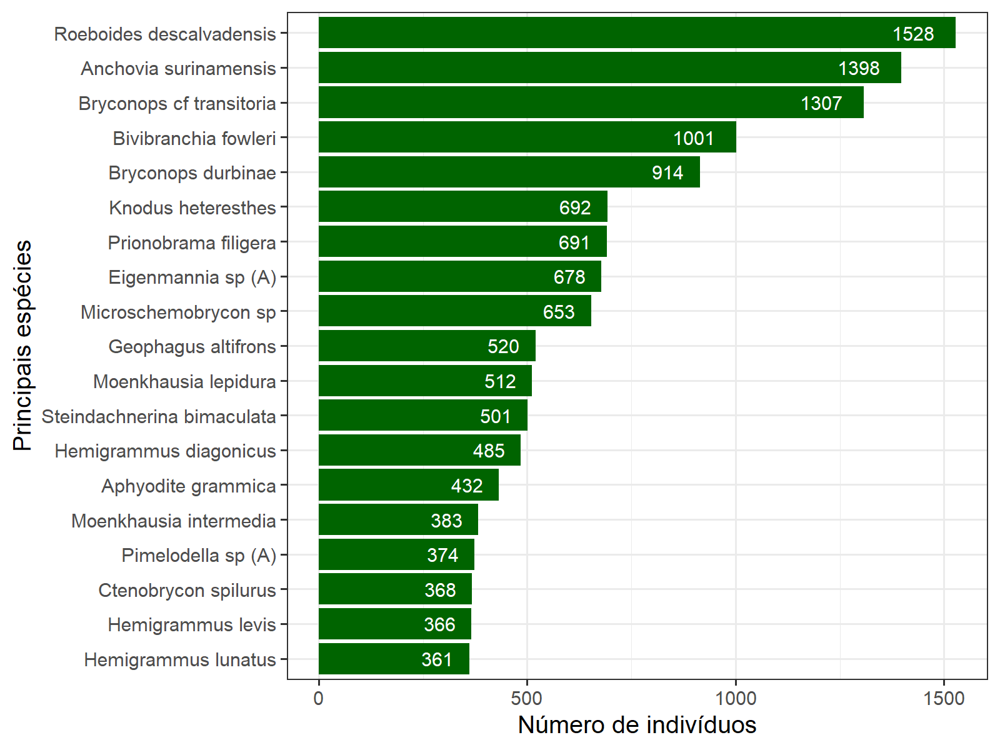
#------- Para deixar itálico------------#
# Primeiro adiciona <i> para todas
esp$esp2 <- paste0("<i>", esp$species, "</i>")
# Separa sp
esp$esp2<- sub(" sp</i>", "</i> sp", esp$esp2)
# Separação manual
esp$esp2[3] <-"<i>Bryconops</i> cf <i>transitoria</i>"
esp$esp2[8] <- "<i>Eigenmannia</i> sp (A)"
esp$esp2[16] <- "<i>Pimelodella</i> sp (A)"
# Gráfico
ggplot(esp, aes(x = reorder(esp2, n), y = n)) +
geom_bar(stat = "identity", fill = "darkgreen") +
coord_flip() +
geom_text(
aes(label = n),
color = "white",
vjust = 0.5,
hjust = 1.5
) +
labs(x = "Principais espécies", y = "Número de indivíduos") +
theme_bw(base_size = 14) +
theme(axis.text.y = element_markdown())
Abundância
# Abundancia-------------------------------
abundancia <- dados_ictio |>
group_by(river_system,habitat ,date) |>
count()Gráfico de abundancia
# Boxplot
# Traduzir os fatores
abundancia$habitat <- as.factor(abundancia$habitat )
levels(abundancia$habitat) <- c("Lago de várzea", "Margem do rio")
plot_abundancia <- ggplot(abundancia, aes(x= river_system, y = n))+
# Geometria boxplot
geom_boxplot(width = .7, fill = "darkseagreen1",
show.legend = FALSE, size = 1)+
# geometria de ponto
geom_point(show.legend = FALSE)+
# tema do gráfico
theme_classic(base_size = 14)+
# Divisão do dataset
facet_wrap( ~ habitat)+
# tema do gráfico
theme(strip.text = element_text(face = "bold"))+
labs(x = "", y = "Abundancia")+
theme(strip.background = element_blank())
plot_abundancia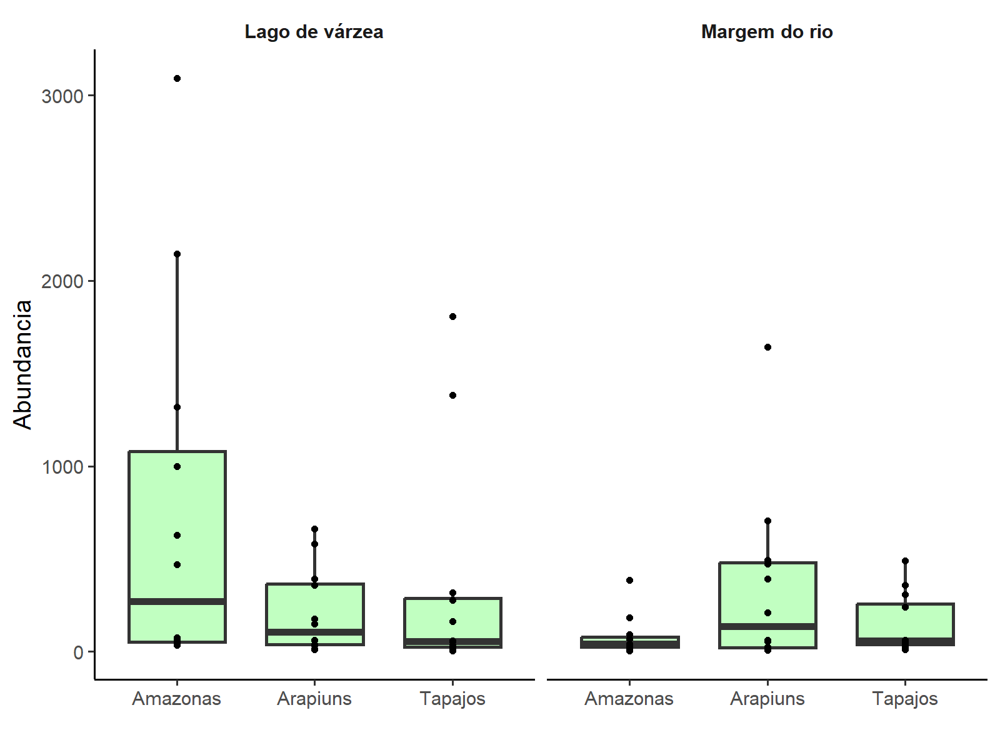
Riqueza de espécies
Gráfico de riquza
# Boxplot
riqueza$habitat <- as.factor(riqueza$habitat)
levels(riqueza$habitat) <- c("Lago de várzea", "Margem do rio")
plot_riqueza <- ggplot(riqueza, aes(x= river_system, y = riq))+
geom_boxplot(width = .7, fill = "darkseagreen1",
show.legend = FALSE, size = 1)+
geom_point(show.legend = FALSE)+
theme_classic(base_size = 14)+
facet_wrap( ~ habitat)+
theme(strip.text = element_text(face = "bold"))+
labs(x = "Sistema fluvial", y = "Riqueza")+
theme(strip.background = element_blank())
plot_riqueza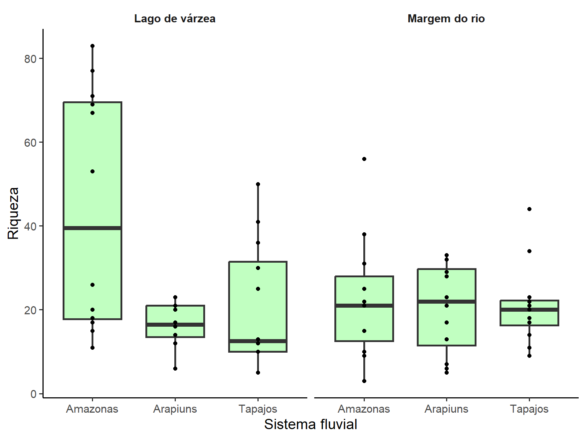
juntando os gráficos
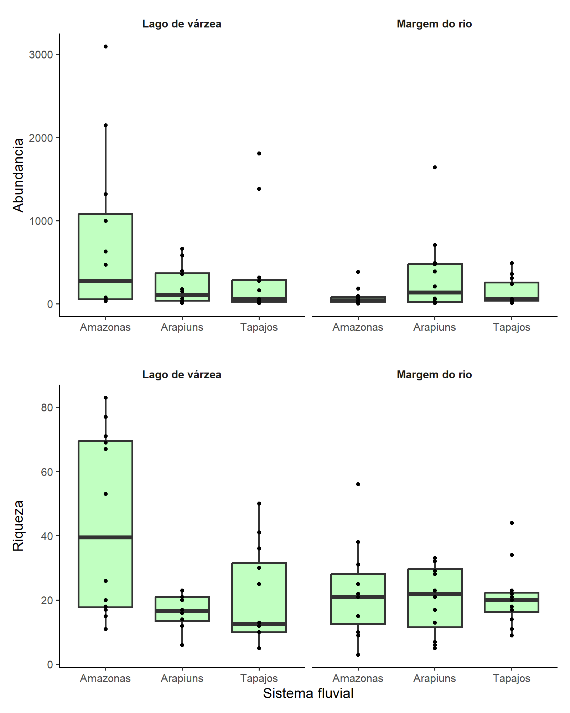
Gráfico de pizza
# Gráfico de pizza
ggplot(data = riqueza_prop, aes(x = "", y = prop,
fill = river_system)) +
geom_bar(stat = "identity", color = "white") +
geom_text(aes(label = paste0(prop, "%")), color = "white",
position = position_stack(vjust = .5), size = 6) +
scale_fill_manual(values = c("darkgreen", "purple", "cyan4")) +
coord_polar(theta = "y", start = 0) +
theme_void() +
labs(fill = "Sistema fluvial")+
theme(legend.text = element_markdown(color = "black",
size = 10))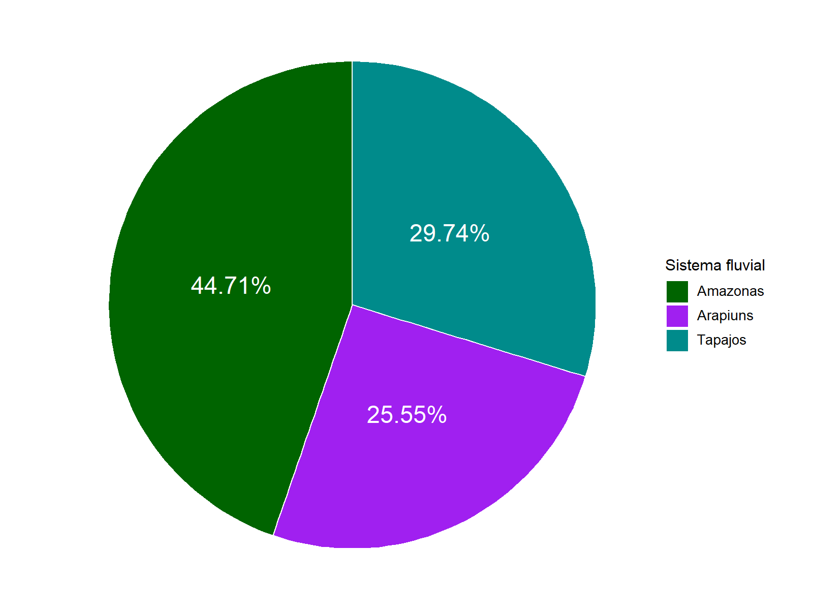
Gráfico de donut
# Gráfico de donut
ggplot(data = riqueza_prop, aes(x = 2, y = prop, fill = river_system)) +
geom_bar(stat = "identity") +
geom_text(aes(label = paste0(prop, "%")), color = "white",
position = position_stack(vjust = .5), size = 4) +
scale_fill_manual(values = c("darkgreen", "purple", "cyan4")) +
coord_polar(theta = "y", start = 0) +
xlim(0, 2.5) +
theme_void() +
theme(legend.position = c(.5, .5)) +
labs( fill = "Espécies")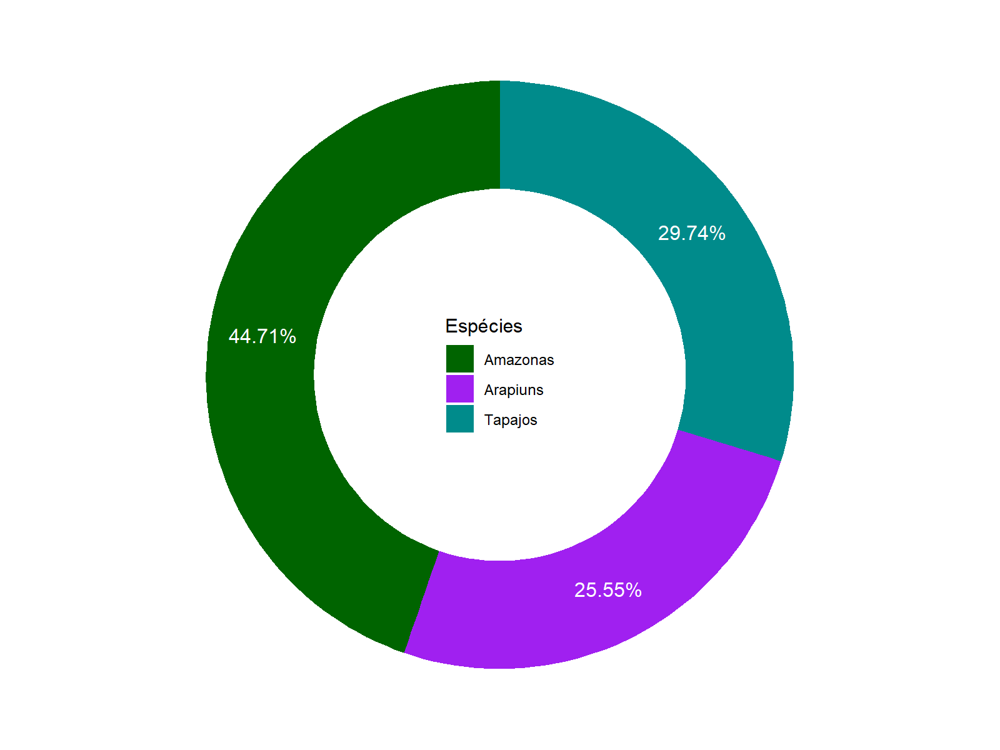
Variáveis limnológicas
glimpse(dados_ictio[,c(5, 7:13)])
Rows: 22,398
Columns: 8
$ river_system <chr> "Amazonas", "Amazonas", "Amazonas", "Amazonas", "Amazonas…
$ date <dttm> 2014-11-26, 2014-11-26, 2014-11-26, 2014-11-26, 2014-11-…
$ habitat <chr> "Floodplain lake", "Floodplain lake", "Floodplain lake", …
$ temp <dbl> 30.1, 30.1, 30.1, 30.1, 30.1, 30.1, 30.1, 30.1, 30.1, 30.…
$ ph <dbl> 6.94, 6.94, 6.94, 6.94, 6.94, 6.94, 6.94, 6.94, 6.94, 6.9…
$ do <dbl> 4.7, 4.7, 4.7, 4.7, 4.7, 4.7, 4.7, 4.7, 4.7, 4.7, 4.7, 4.…
$ cd <dbl> 78.1, 78.1, 78.1, 78.1, 78.1, 78.1, 78.1, 78.1, 78.1, 78.…
$ tb <dbl> 169, 169, 169, 169, 169, 169, 169, 169, 169, 169, 169, 16…
dados_limno <- dados_ictio[,c(4,5, 7:13)]Temperatura
Verificando a relação com dados das espécies
# Temperatura
dados_temp <- dados_limno |>
group_by(river_system, habitat, temp) |>
select(species) |>
count()
Adding missing grouping variables: `river_system`, `habitat`, `temp`
dados_temp
# A tibble: 77 × 4
# Groups: river_system, habitat, temp [77]
river_system habitat temp n
<chr> <chr> <dbl> <int>
1 Amazonas Floodplain lake 28.7 53
2 Amazonas Floodplain lake 28.8 469
3 Amazonas Floodplain lake 29 4
4 Amazonas Floodplain lake 29.2 628
5 Amazonas Floodplain lake 29.4 19
6 Amazonas Floodplain lake 29.8 91
7 Amazonas Floodplain lake 30 19
8 Amazonas Floodplain lake 30.1 2144
9 Amazonas Floodplain lake 30.2 3092
10 Amazonas Floodplain lake 30.4 1356
# ℹ 67 more rowsGráfico
ggplot(dados_temp, aes(x = temp, y = n))+
geom_point(aes(col = river_system,
shape = habitat), size = 3)+
theme_bw(base_size = 14)+
labs(x = "Temperatura", y = "Abundância", col = "Sistema fluvial ", shape = "Habitat")+
# "right", "left", "bottom", "top"
scale_color_brewer(palette = "Dark2")+
theme(legend.position = "right",
legend.key.height = unit(.3, 'cm'),
legend.text = element_text(size=12),
legend.background = element_blank())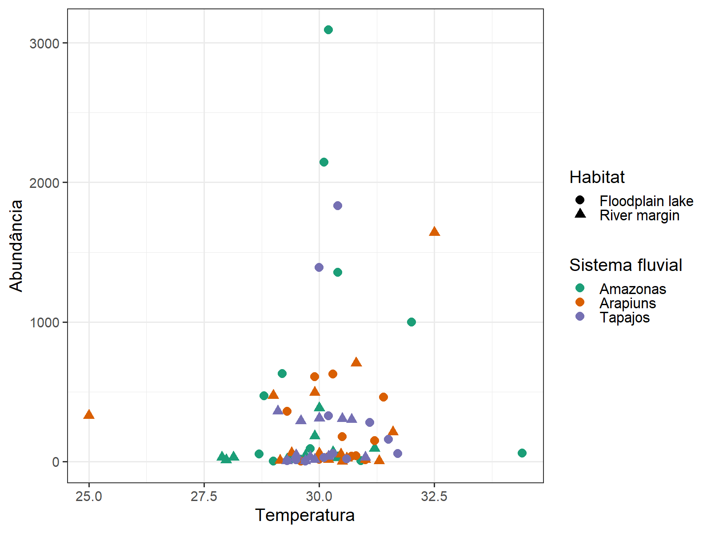
Da para ver o comportamento dos dados por um histograma
dados_ictio |>
group_by(river_system, species, temp) |>
count(species) |>
ggplot(aes(x = temp, fill = river_system))+
geom_histogram(alpha = .4, position = "dodge",bins = 15)+
scale_fill_manual(values = c("darkorchid","darkgreen", "cyan4"))+
theme_bw(base_size = 14)+
labs(x = "Temperatura", y = "Contagem", fill = "Sistema de Rio")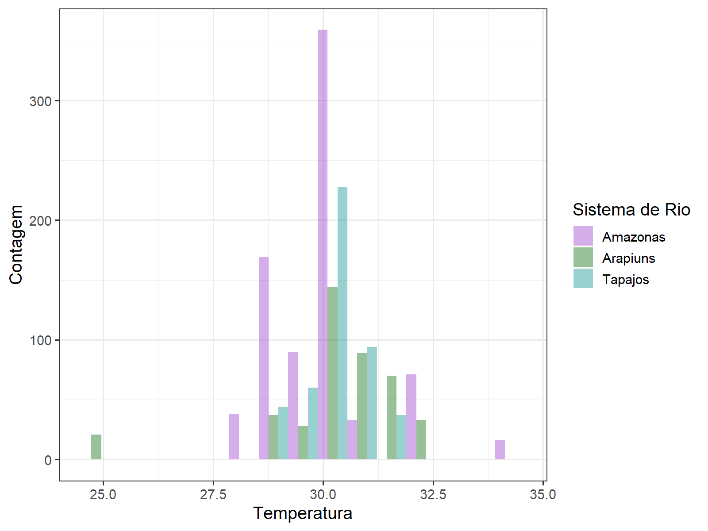
Ou por um gráfico de densidade
dados_ictio |>
group_by(river_system, species, temp) |>
count(species) |>
ggplot(aes(x = temp, fill = river_system))+
geom_density(alpha = .4)+
scale_fill_manual(values = c("darkorchid","darkgreen", "cyan4"))+
theme_bw(base_size = 14)+
labs(x = "Temperatura", y = "Densidade", fill = "Sistema de Rio")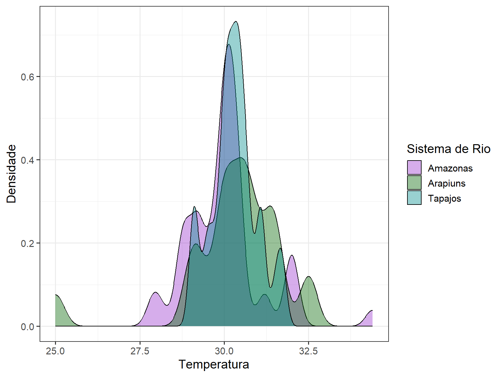
Sumário estatístico
sumario_temp <- dados_limno |>
group_by(river_system, habitat) |>
select(temp) |>
get_summary_stats(type = "common")
Adding missing grouping variables: `river_system`, `habitat`
sumario_temp
# A tibble: 6 × 12
river_system habitat variable n min max median iqr mean sd se
<chr> <chr> <fct> <dbl> <dbl> <dbl> <dbl> <dbl> <dbl> <dbl> <dbl>
1 Amazonas Floodp… temp 8965 28.7 34.4 30.2 0.3 30.3 0.821 0.009
2 Amazonas River … temp 911 27.9 31.2 30 0.1 29.9 0.7 0.023
3 Arapiuns Floodp… temp 2519 29.3 31.4 30.3 0.9 30.3 0.679 0.014
4 Arapiuns River … temp 4098 25 32.5 30.8 2.6 30.7 2.10 0.033
5 Tapajos Floodp… temp 4166 29.3 31.7 30.4 0.4 30.4 0.402 0.006
6 Tapajos River … temp 1739 29.1 31 30 0.9 30.0 0.59 0.014
# ℹ 1 more variable: ci <dbl>Visualizando o resultado
plot_temp <- ggplot(sumario_temp,
aes(x = river_system,y = mean,col = habitat,group = habitat)) +
geom_line(linewidth = 1, position = position_dodge(.5)) +
geom_point(position = position_dodge(0.5)) +
geom_errorbar(aes(ymin = mean - sd, ymax = mean + sd),
linewidth = 1,width = .2, position = position_dodge(0.5))+
theme_bw()+
scale_color_manual(values = c("#08bb00", "#b300bb"))+
labs(x = "Sistema de Rio", y = "Temperatura (C°)")
plot_temp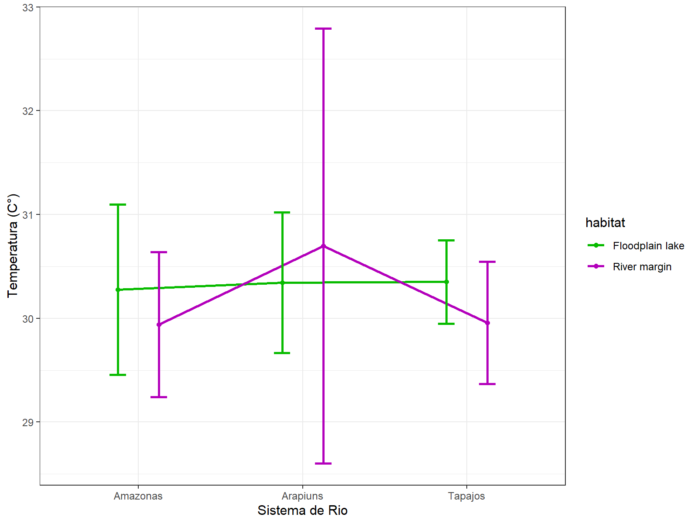
pH
Visualizando o reultado
# Visualizando
plot_ph <- ggplot(sumario_ph,
aes(
x = river_system,
y = mean,
col = habitat,
group = habitat
)) +
geom_line(linewidth = 1, position = position_dodge(.5)) +
geom_point(position = position_dodge(0.5)) +
geom_errorbar(
aes(ymin = mean - sd, ymax = mean + sd),
linewidth = 1,
width = .2,
position = position_dodge(0.5)
) +
theme_bw() +
scale_color_manual(values = c("#08bb00", "#b300bb"))+
labs(x = "Sistema de Rio", y = "pH")
plot_ph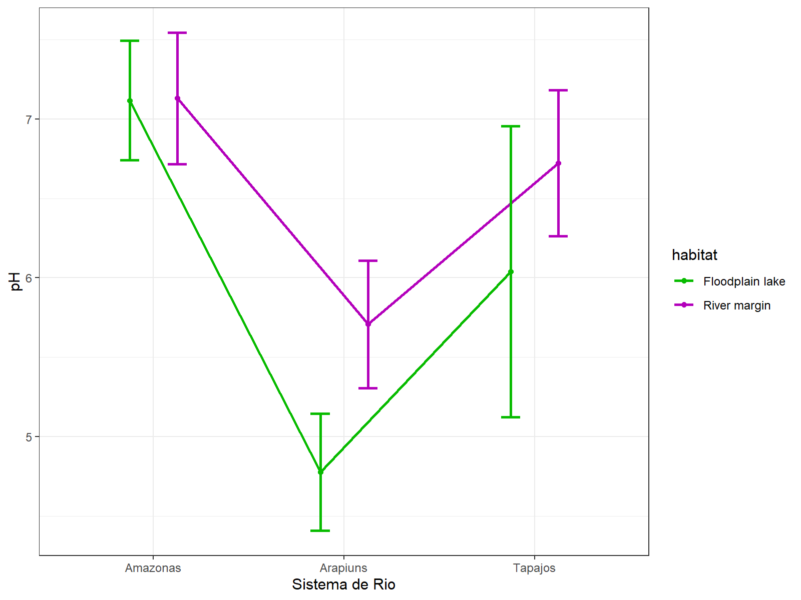
Do
Visualizando o resultado
# Visualizando
plot_do <- ggplot(sumario_do, aes( x = river_system,
y = mean, col = habitat,
group = habitat)) +
geom_line(linewidth = 1, position = position_dodge(.5)) +
geom_point(position = position_dodge(0.5)) +
geom_errorbar(
aes(ymin = mean - sd, ymax = mean + sd),
linewidth = 1,
width = .2,
position = position_dodge(0.5)
) +
theme_bw() +
labs(x = "Sistema de Rio", y = bquote("Média de DO mgL"^-1)) +
scale_color_manual(values = c("#08bb00", "#b300bb"))
plot_do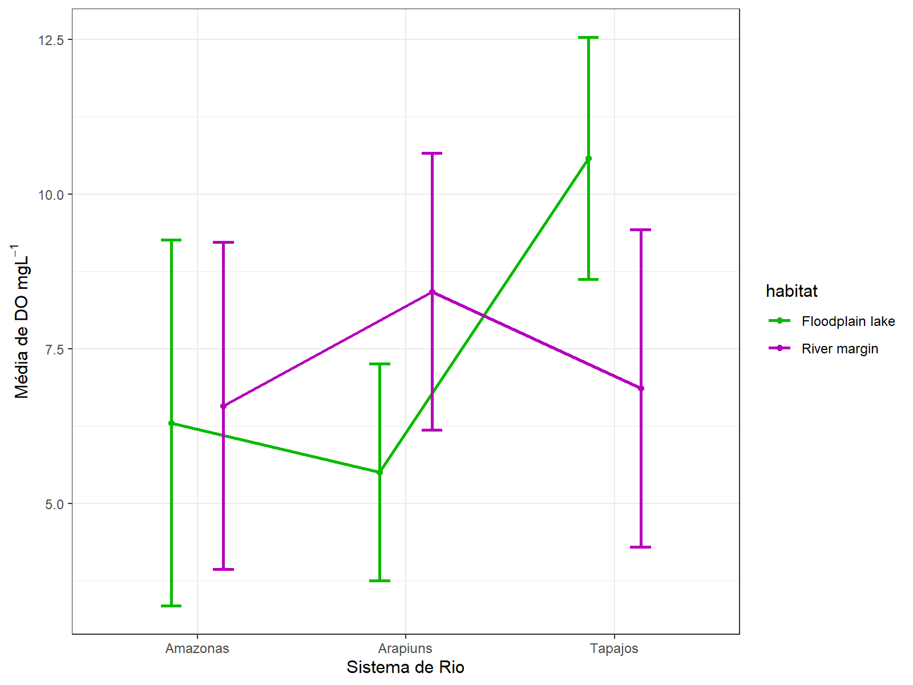
Os resultados podem ser apresentados em um gráfico de barras com erros
# Gráfico de barras com erros
ggplot(sumario_do, aes( x = river_system,
y = mean, fill = habitat,
group = habitat)) +
# geom_line(linewidth = 1, position = position_dodge(.5)) +
geom_bar(stat="identity", position=position_dodge())+
geom_errorbar(
aes(ymin = mean - sd, ymax = mean + sd),
linewidth = 1,
width = .2,
position = position_dodge(0.9)
)+
geom_point(position = position_dodge(0.9)) +
theme_bw() +
scale_fill_manual(values = c("#08bb00", "#b300bb"))+
labs(x = "Sistema de Rio", y = bquote("Média de DO mgL"^-1))
Testes estatisticos
Teste t
Pergunta: Será se o comprimento padrão da espécie é diferente por período?
# Teste t -------------------------------------------------------
dados_peixes <- read_csv2('dados/teste_t.csv')
ℹ Using "','" as decimal and "'.'" as grouping mark. Use `read_delim()` for more control.
Rows: 51 Columns: 2
── Column specification ────────────────────────────────────────────────────────
Delimiter: ";"
chr (1): periodo
dbl (1): cp
ℹ Use `spec()` to retrieve the full column specification for this data.
ℹ Specify the column types or set `show_col_types = FALSE` to quiet this message.Checando a normalidade
Homocedasticidade
Resultado do teste T
# Teste T
t.test(cp ~ periodo, data = dados_peixes, var.equal = TRUE)
Two Sample t-test
data: cp by periodo
t = 4.1524, df = 49, p-value = 0.000131
alternative hypothesis: true difference in means between group Cheia and group Seca is not equal to 0
95 percent confidence interval:
0.2242132 0.6447619
sample estimates:
mean in group Cheia mean in group Seca
103.6954 103.2609
# ou
dados_peixes |> t_test(cp ~ periodo, var.equal = TRUE)
# A tibble: 1 × 8
.y. group1 group2 n1 n2 statistic df p
* <chr> <chr> <chr> <int> <int> <dbl> <dbl> <dbl>
1 cp Cheia Seca 28 23 4.15 49 0.000131Visualizando o resultado
ggplot(dados_peixes, aes(x = periodo, y = cp))+
geom_boxplot(fill = c("#08bb00", "#b300bb"), color = "black",
linewidth = 1) +
scale_color_manual(values = c("black", "black")) +
theme_bw() +
theme(legend.position = "none")+
labs(x = "Período", y = "Comprimento padrão (mm)")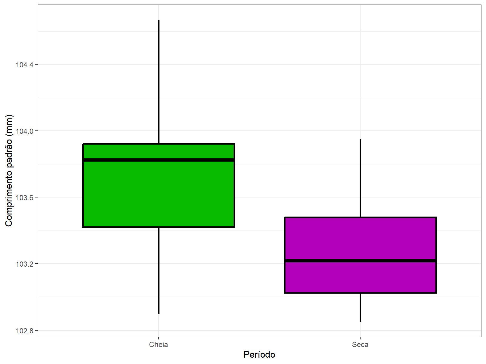
Regressão
Pergunta: A temperatura afeta no tamanho da espécie?
# Regressão -----------------------------------------------------
regressao <- read_csv2('dados/regressao.csv')
ℹ Using "','" as decimal and "'.'" as grouping mark. Use `read_delim()` for more control.
Rows: 108 Columns: 3
── Column specification ────────────────────────────────────────────────────────
Delimiter: ";"
chr (1): periodo
dbl (2): cp, temp
ℹ Use `spec()` to retrieve the full column specification for this data.
ℹ Specify the column types or set `show_col_types = FALSE` to quiet this message.Verificar as premissas
modelo_regressao <- lm(cp ~ temp, data = regressao)
## Verificar as premissas do teste
par(mfrow = c(2, 2), oma = c(0, 0, 2, 0))
plot(modelo_regressao)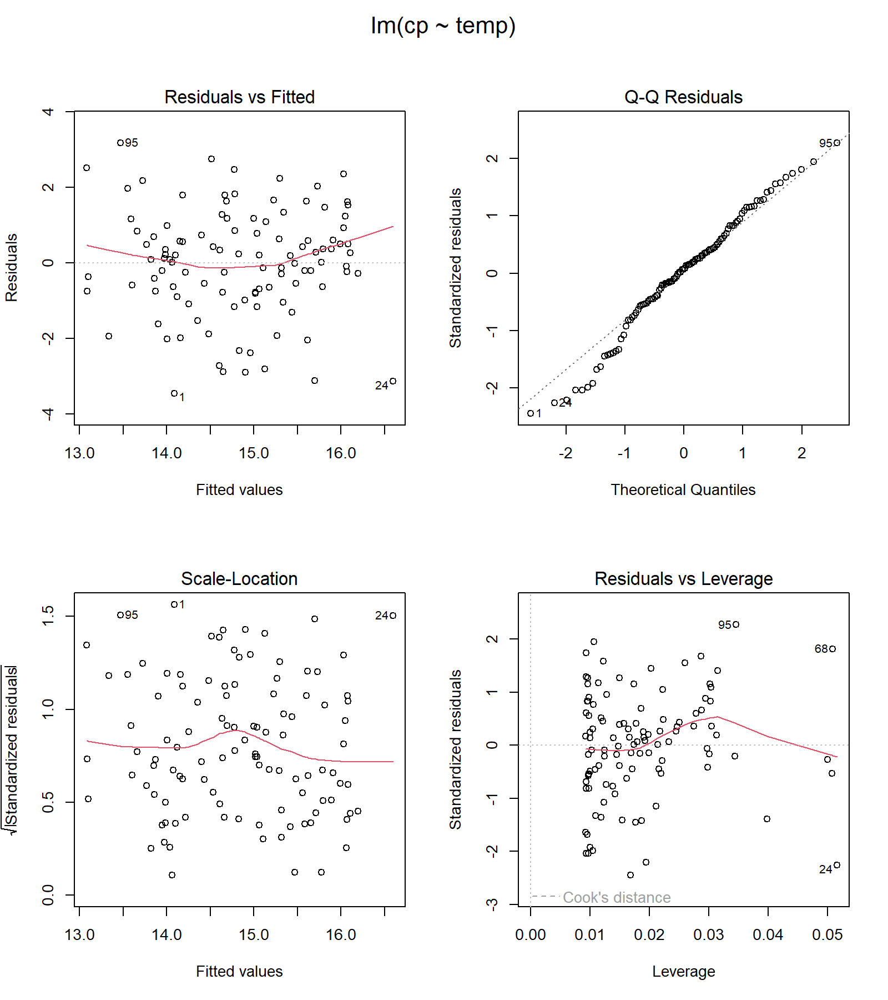
Normalidade
Resultados
## Resultados usando a função anova
anova(modelo_regressao)
Analysis of Variance Table
Response: cp
Df Sum Sq Mean Sq F value Pr(>F)
temp 1 73.677 73.677 36.25 2.533e-08 ***
Residuals 106 215.443 2.032
---
Signif. codes: 0 '***' 0.001 '**' 0.01 '*' 0.05 '.' 0.1 ' ' 1
## Resultados usando a função summary
summary(modelo_regressao)
Call:
lm(formula = cp ~ temp, data = regressao)
Residuals:
Min 1Q Median 3Q Max
-3.4581 -0.7552 0.1034 0.8751 3.1815
Coefficients:
Estimate Std. Error t value Pr(>|t|)
(Intercept) 6.59948 1.37465 4.801 5.21e-06 ***
temp 0.26707 0.04436 6.021 2.53e-08 ***
---
Signif. codes: 0 '***' 0.001 '**' 0.01 '*' 0.05 '.' 0.1 ' ' 1
Residual standard error: 1.426 on 106 degrees of freedom
Multiple R-squared: 0.2548, Adjusted R-squared: 0.2478
F-statistic: 36.25 on 1 and 106 DF, p-value: 2.533e-08Anova
Pergunta: A riqueza de espécie é diferente entre os períodos
# Anova ---------------------------------------------------------
dados_anova <- read.csv2("dados/dados_anova.csv")Normalidade
Homogeneidade da variância
## Homogeneidade da variância
bartlett.test(riqueza ~ periodo, data = dados_anova)
Bartlett test of homogeneity of variances
data: riqueza by periodo
Bartlett's K-squared = 15.657, df = 3, p-value = 0.001333
# ou
leveneTest(riqueza ~ as.factor(periodo), data = dados_anova)
Levene's Test for Homogeneity of Variance (center = median)
Df F value Pr(>F)
group 3 4.3277 0.008183 **
56
---
Signif. codes: 0 '***' 0.001 '**' 0.01 '*' 0.05 '.' 0.1 ' ' 1Quando a Homogeneidade é violada é feita a Anova de Welch
# Anova de Welch
oneway.test(riqueza ~ periodo, data = dados_anova)
One-way analysis of means (not assuming equal variances)
data: riqueza and periodo
F = 72.755, num df = 3.000, denom df = 29.307, p-value = 1.099e-13
# Resultado bonitinho
welch_anova_test(dados_anova, riqueza ~ periodo)
# A tibble: 1 × 7
.y. n statistic DFn DFd p method
* <chr> <int> <dbl> <dbl> <dbl> <dbl> <chr>
1 riqueza 60 72.8 3 29.3 1.10e-13 Welch ANOVADiferenças entre os períodos
## Diferenças entre os períodos
TukeyHSD(modelo)
Tukey multiple comparisons of means
95% family-wise confidence level
Fit: aov(formula = riqueza ~ periodo, data = dados_anova)
$periodo
diff lwr upr p adj
Enchente-Cheia -5.933333 -24.235434 12.36877 0.8260846
Seca-Cheia 81.733333 63.431233 100.03543 0.0000000
Vazante-Cheia 26.466667 8.164566 44.76877 0.0018098
Seca-Enchente 87.666667 69.364566 105.96877 0.0000000
Vazante-Enchente 32.400000 14.097900 50.70210 0.0001047
Vazante-Seca -55.266667 -73.568767 -36.96457 0.0000000
# Resultado bonitinho
tukey_hsd(modelo)
# A tibble: 6 × 9
term group1 group2 null.value estimate conf.low conf.high p.adj
* <chr> <chr> <chr> <dbl> <dbl> <dbl> <dbl> <dbl>
1 periodo Cheia Enchente 0 -5.93 -24.2 12.4 8.26e- 1
2 periodo Cheia Seca 0 81.7 63.4 100. 7.32e-12
3 periodo Cheia Vazante 0 26.5 8.16 44.8 1.81e- 3
4 periodo Enchente Seca 0 87.7 69.4 106. 7.31e-12
5 periodo Enchente Vazante 0 32.4 14.1 50.7 1.05e- 4
6 periodo Seca Vazante 0 -55.3 -73.6 -37.0 4.77e-10
# ℹ 1 more variable: p.adj.signif <chr>Abordagem não paramétrica
# Não paramétrico
kruskal_test(dados_anova, riqueza ~ periodo)
# A tibble: 1 × 6
.y. n statistic df p method
* <chr> <int> <dbl> <int> <dbl> <chr>
1 riqueza 60 40.4 3 0.00000000878 Kruskal-Wallis
dunn_test(dados_anova, riqueza ~ periodo)
# A tibble: 6 × 9
.y. group1 group2 n1 n2 statistic p p.adj p.adj.signif
* <chr> <chr> <chr> <int> <int> <dbl> <dbl> <dbl> <chr>
1 riqueza Cheia Enchente 15 15 -0.957 3.39e-1 3.39e-1 ns
2 riqueza Cheia Seca 15 15 4.89 1.01e-6 5.07e-6 ****
3 riqueza Cheia Vazante 15 15 2.15 3.12e-2 6.24e-2 ns
4 riqueza Enchente Seca 15 15 5.85 5.04e-9 3.02e-8 ****
5 riqueza Enchente Vazante 15 15 3.11 1.86e-3 7.45e-3 **
6 riqueza Seca Vazante 15 15 -2.73 6.24e-3 1.87e-2 * Todo o
conteúdo está disponível sob a licença CC BY-NC-SA 4.0